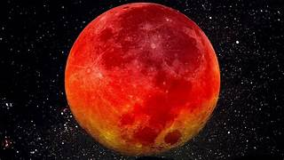

PLANET
MARS
Mars adalah planet terdekat keempat dari Matahari. Namanya diambil dari dewa perang Romawi, Mars. Planet ini sering dijuluki sebagai "planet merah" karena tampak dari jauh berwarna kemerah-kemerahan. Ini disebabkan oleh keberadaan besi(III) oksida di permukaan planet Mars. Mars adalah planet bebatuan dengan atmosfer yang tipis. Di permukaan Mars terdapat kawah, gunung berapi, lembah, gurun, dan tudung es. Periode rotasi dan siklus musim Mars mirip dengan Bumi. Di Mars berdiri Olympus Mons, gunung tertinggi di Tata Surya, dan Valles Marineris, lembah terbesar di Tata Surya. Selain itu, di belahan utara terdapat cekungan Borealis yang meliputi 40% permukaan Mars.